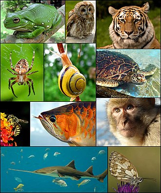

Твари́ни (лат. Animalia або Metazoa) — царство переважно багатоклітинних еукаріотичних (ядерних) створінь, однією з найголовніших ознак якого є гетеротрофність (тобто, споживання готових органічних речовин) та здатність діяльно рухатись. До царства тварин не належать рослини та гриби — теж великі (але не єдині) царства еукаріотів. Втім, існує чимало тварин, що ведуть нерухомий спосіб життя, а гетеротрофність властива також грибам і деяким рослинам-паразитам. У клітинах тварин (як і інших еукаріотів) міститься утворене ядро.
У побуті, під словом «тварини» часто розуміють лише чотириногих наземних хребетних ( ссавці, плазуни та земноводні). У науці за терміном «тварини» (Animalia), закріплено ширше значення (див. вище). Тому кажуть, що до тварин, крім ссавців, належить багато інших істот: риби, птахи, комахи, павукоподібні, молюски, морські зірки, черви тощо. Людина теж належить до царства тварин, але зазвичай розглядається окремо — навіть професійні біологи вживають звороти «тварини і людина» чи «тварини, зокрема людина».
Водночас, раніше до цього царства відносили багатьох гетеротрофних найпростіших і ділили тварин на підцарства: одноклітинні Protozoa і багатоклітинні Metazoa. Зараз назва «тварини» в таксономічному сенсі закріпилася за багатоклітинними. В такому розумінні, тварини як таксон мають певніші ознаки — для них притаманні оогамія, багатотканинна будова, наявність щонайменше двох зародкових листків, стадій бластули і гаструли в зародковому розвитку. У переважної більшості тварин є м'язи і нерви (за винятком губок, пластинчастих, мезозоїв, кнідоспоридій, які, можливо, їх втратили).
Характерні особливості тварин:
Вважається, що тварини походять від одноклітинних джгутикових, а їх найближчі відомі живі родичі — це хоанофлагеляти, комірцеві джгутиконосці, морфологічно подібні до хоаноцитів деяких губок. Молекулярні дослідження визначили місце тварин в надгрупі Opisthokonta, куди також включають хоанофлагелят, справжні гриби і невелику кількість паразитичних найпростіших. Назва Opisthokonta означає заднє розташування джгутика в рухомій клітині (як у сперматозоїдів більшості тварин), тоді як інші еукаріоти здебільшого мають передній джгутик.
Перші викопні рештки тварин належать до кінця докембрію (близько 610 мільйонів років тому). Вони відомі як едіакарська або вендська фауна. Однак їх складно зіставити з пізнішими викопними. Вони могли бути попередниками сучасних груп тварин, незалежними групами або взагалі не тваринами. Найвідоміші типи тварин більш-менш одночасно з'являються під час кембрійського періоду, близько 542 мільйонів років тому. Ця подія, названа кембрійським вибухом, була викликана або швидкою дивергенцією тварин, або такою зміною умов, яка зробила можливим скам'яніння решток. Однак деякі палеонтологи і геологи припускають, що тварини з'явилися значно раніше, ніж вважалося раніше, можливо, навіть близько мільярда років тому[джерело?].
На початку тонійського періоду близько 1 мільярда років тому, відзначено скорочення різноманітності строматолітів, що може свідчити про появу нових тварин протягом цього часу. Крім того, сліди скам'янілостей, що належать до цього ж періоду, такі як відбитки й нори, можуть свідчити про наявність хробаків великих розмірів (близько 5 мм завширшки), побудованих як земляні хробаки[1]. Проте дуже схожі відбитки створюються сьогодні велетенськими одноклітинними найпростішими Gromia sphaerica, і це ставить під сумнів подальше тлумачення таких відбитків як доказ ранньої еволюції тварин[2][3].
Зоологія — наука, що вивчає світ тварин та їх взаємозв'язки з навколишнім середовищем. Зоологія являє собою цілу систему наукових дисциплін, кожна з яких має своє завдання і свої об'єкти дослідження що вивчає світ тварин та їх взаємозв'язки з навколишнім середовищем. . Протозоологія вивчає одноклітинних тварин, гельмінтологія — паразитичних червів, карцинологія — ракоподібних, арахнологія — павукоподібних, ентомологія — комах, малакологія — молюсків, іхтіологія — риб, батрахологія — земноводних, герпетологія — плазунів, орнітологія — птахів, мамаліологія — ссавців. Сукупність тварин тієї чи іншої території вивчає фауністика. Морфологія вивчає будову, форму тіла тварин і закономірності формоутворення окремих органів; включає анатомію, ембріологію, гістологію, цитологію. Умови існування тварин і їхні взаємовідносини з навколишнім середовищем вивчає екологія, поведінку тварин у порівняльному та еволюційному плані — етологія, закономірності поширення їх на земній кулі — зоогеографія, явища мінливості і спадковості — генетика тварин.
Методи вивчення тваринних організмів:
Результати дослідів обробляють за допомогою математично-статистичного аналізу.